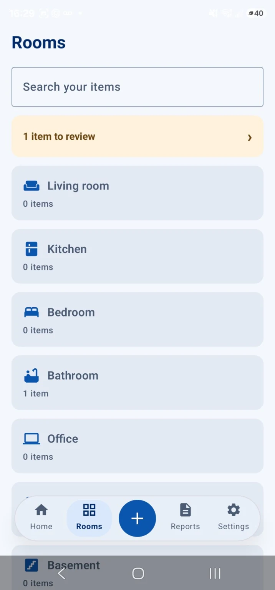
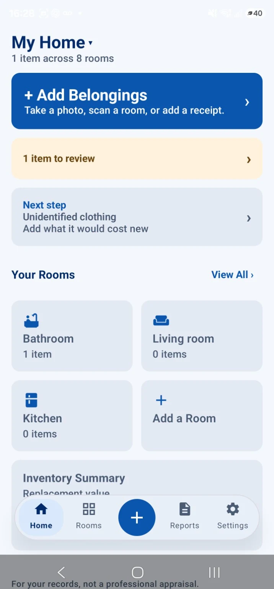
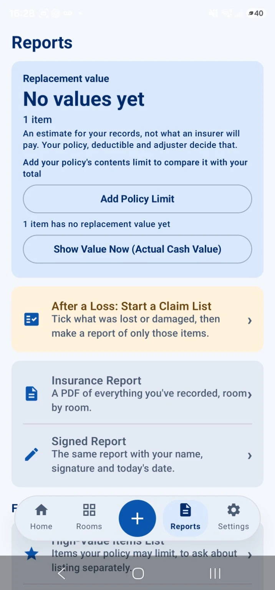
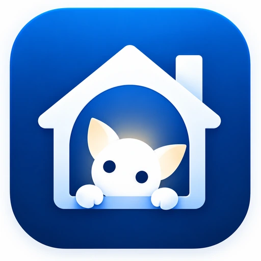

HOBWICKDESIGNED FOR CANADA · INCLUDING QUÉBEC
ACTUAL APP SCREENSHOTS / ANDROID PREVIEW

01 / MOBILE APPLICATIONiOS beta · Android preview
Hobwick
A home inventory and insurance-documentation app built for Canadian households, including Québec. Organize belongings, preserve records, and prepare for potential claims.
Canada + QuébecEnglish / françaisPDF reports & backups